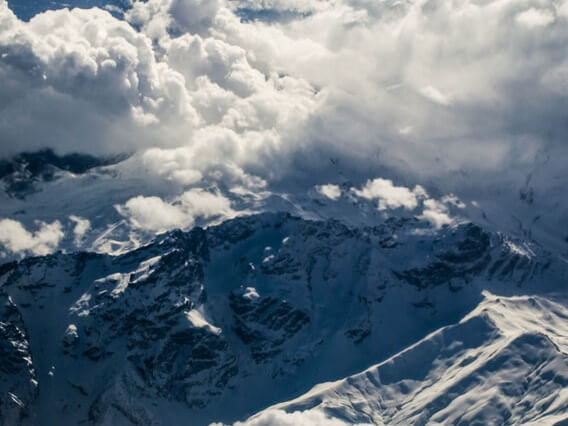
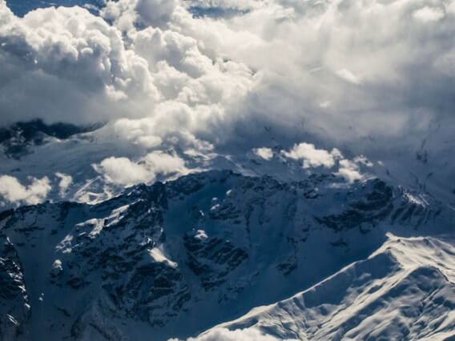
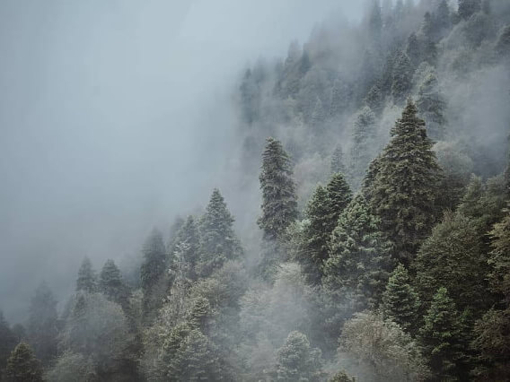
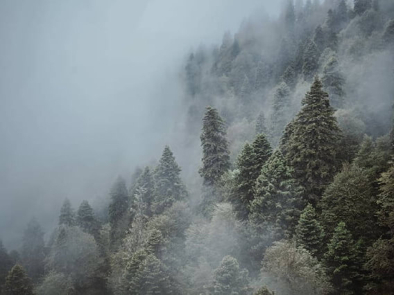
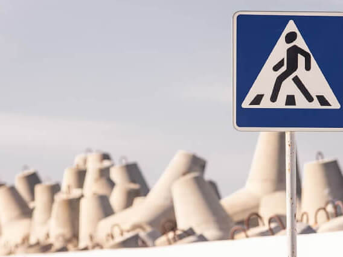
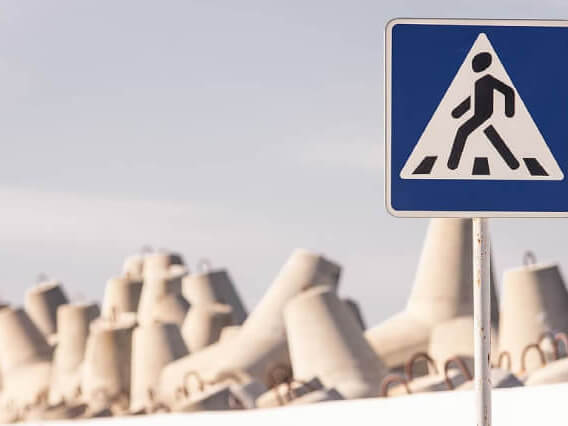
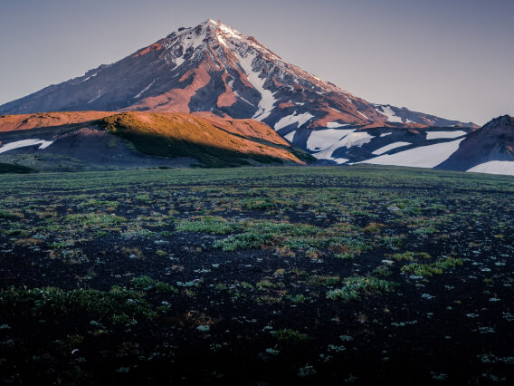
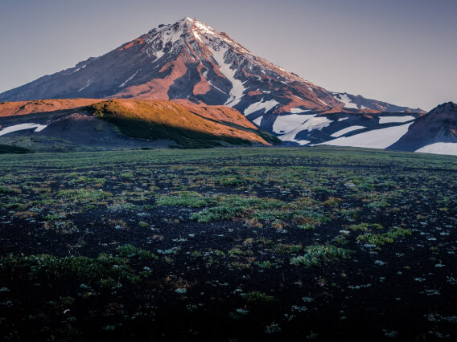
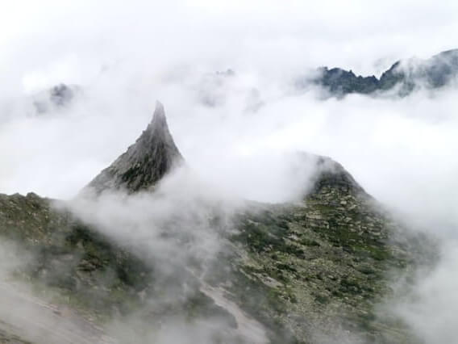
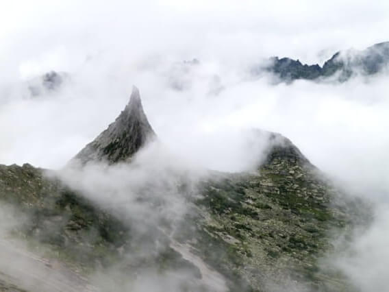

 



 

 

 

Curonian Spit

URL
park-kosa.ruHere, in the middle of forests and sand dunes, you can see two water parks the horizon — the calm Curonian Lagoon on one side and the rippling waves of the Baltic Sea with another. A unique natural area on the edge of the Russian enclave.
The Kaliningrad Region does not end there. For the traveler and the researcher is also in the neighborhood — the westernmost point of Russia, the Baltic Spit - and the German heritage placers of small seaside towns. The atmosphere of these places eliminates the hustle and bustle, plunging into the tranquility of nature and the smell of the steely, cool sea.